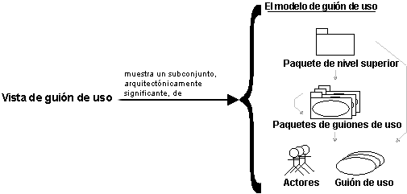

| Concepto: Vista de guión de uso |
 |
|
| Elementos relacionados |
|---|
|
Para proporcionar una base para planificar el contenido técnico de las iteraciones, se utiliza una vista de la arquitectura denominada vista de guión de uso en los siguientes disciplina de Requisitos . Sólo hay una vista de guión de uso del sistema, que ilustra los guiones de uso y los escenarios que implican riesgos técnicos, de clase o de comportamiento significativos arquitectónicamente. La vista de guión de uso se perfecciona y se contempla inicialmente en todas las iteraciones.  La vista de guión de uso muestra un subconjunto significativo arquitectónicamente del modelo de guión de uso, un subconjunto de guiones de uso y actores. Las actividades de análisis, diseño e implementación posteriores a los requisitos se centran en la noción de una arquitectura. La producción y la validación de esta arquitectura son el foco principal de las primeras iteraciones, especialmente durante la fase de Elaboración. La arquitectura se representa mediante un número diferente de vistas de la arquitectura, que, esencialmente, son extractos que ilustran los elementos "significativos arquitectónicamente" de los modelos. Hay cuatro vistas adicionales: Vista lógica, Vista de proceso, Vista de despliegue y Vista de implementación. Estas vistas se tratan en las disciplinas de Análisis y diseño e Implementación . Las vistas de la arquitectura se muestran en el Documento de arquitectura de software. Se puede añadir vistas diferentes, como una vista de seguridad, para representar otros aspectos específicos de la arquitectura de software. Esencialmente, las vistas de la arquitectura se pueden ver como abstracciones o simplificaciones de los modelos construidos en las que se hacen más visibles las características importantes, y se dejan de lado los detalles. La arquitectura es un método relevante para aumentar la calidad de cualquier compilación de modelo durante el desarrollo del sistema. |
© Copyright IBM Corp. 1987, 2006. Reservados todos los derechos. |